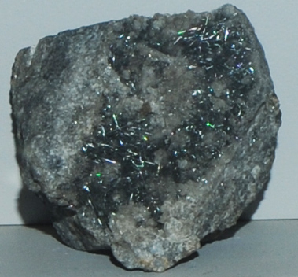

|

| Pb5Sb4S11
This sample of boulangerite is displayed in the Smithsonian Museum of Natural History. Boulangerite is an sulfide mineral of lead and antimony with the composition Pb5Sb4S11 . This sample is about 6x6 cm and is from Pribram, Cechy, Czech Republic.
|